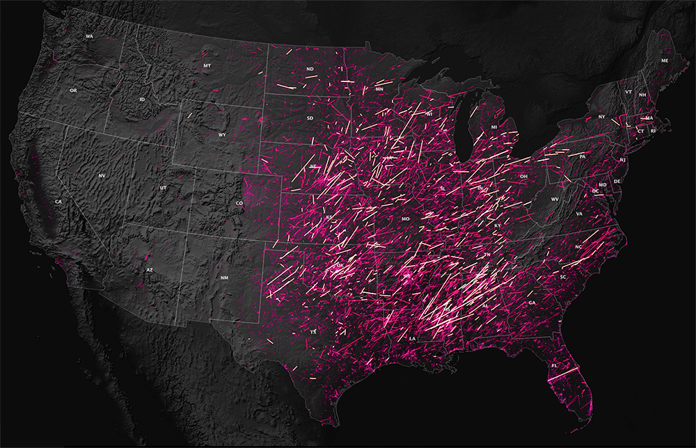
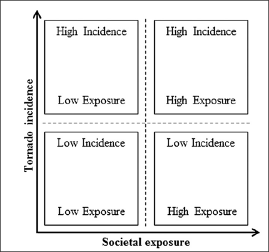
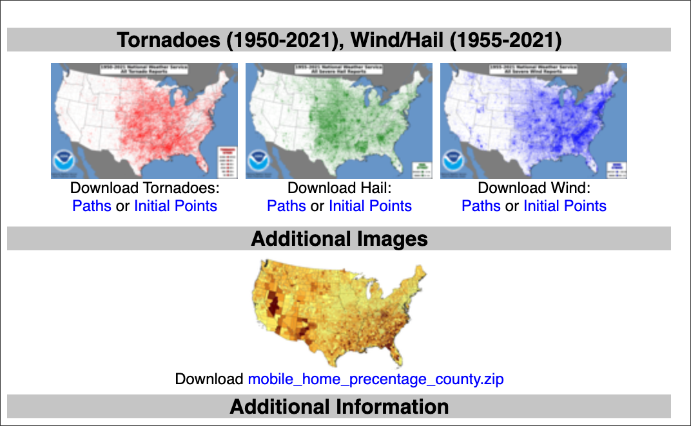
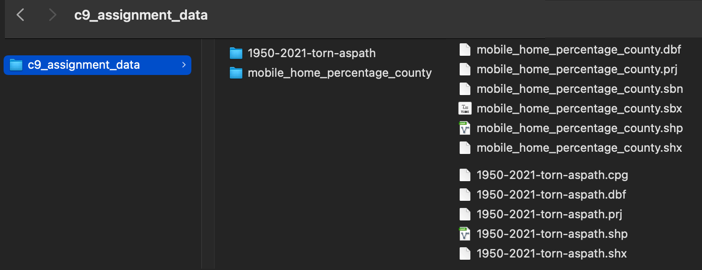
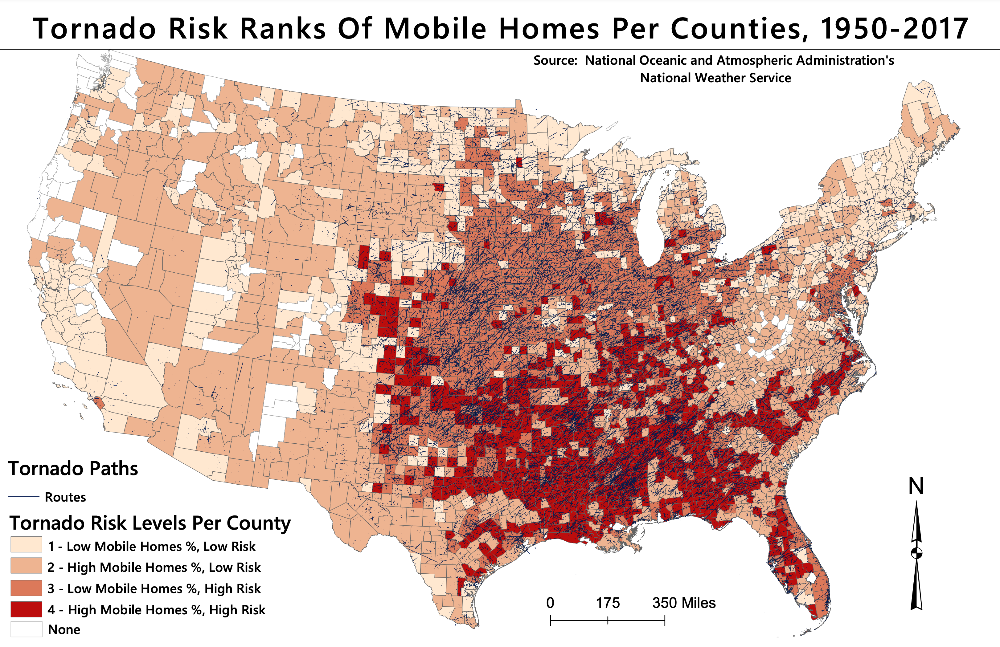

Preamble
In this ninth assignment, you will utilize the Class 9 Technical Lab as a guide to complete your ninth mapping project utilizing input data representing tornado strikes in the United States. In this vulnerability assignment, you will utilize two variables - one for hazard and one for vulnerability and exposure - to map tornado vulnerability across the conterminous United States.
A custom scoring mechanism will be utilized to thematically map four conditions:

The assignment features several sections as follows:
- Mapping Vulnerability - Hazard x Vulnerability = Risk
- Vector Geoprocessing
- Attribute Summarization
- Custom Scoring Mechanism
- Thematic map design for Mapping Vulnerability
Assignment 9 - Data
Original Data Source:

Location of Class 9 Assignment Direct Data Download
To begin the assignment, download and access the assignment directory. Create a new assignment .mxd and connect Data Source Manager to the assignment directory to import assignment input vector features:
- Data download includes:
mobile_home_percentage_county.zip1950-2021-torn-aspath.zip(Tornado Paths, not points)

Class 8 Readings:
This week’s readings are NOT from the course textbook, and there will be no quiz for this week’s content. For context readings, refer to the Further References section at the bottom of the assignment.
Assignment Step 1
With the assignment data downloaded to your local drive, make a connection via ArcCatalog. Make sure to load the mobile home data first to set the project CRS. Then load the tornado data, and immediately reproject the tornado data to the project CRS USA Contiguous Lambert Conformal Conic with the EPSG code as EPSG:102004.
Assignment Step 2 - Overlay Geoprocessing
Currently many tornado paths in the historical dataset tornado_paths cross multiple counties. In order to derive a count of tornadoes per county, there are several overlay techniques that could be utilized. Here we will use Identify; the result will be a polyline dataset that contains the attributes of the counties in the mobile_home_counties along with those of the original tornado_paths.
Assignment Step 4 - Table Development
With the Identify complete, a summarization will be developed for a total count of tornadoes per county.
Assignment Step 5 - Normalization by Geography Attribute
Normalize to constant of 100 sq. miles to account for county areal differences between the various county sizes.
Assignment Step 6 - Rank Assignments
Use the median societal exposure and tornado incidence scores as the break between high and low exposure and incidence - source
- 4 Rank Conditions:
- 11.22% = Median Mobile Home per County
- 3.22 Median Tornado segments per county
- Condition #1 -
- Low Incidence, Low Exposure
- LI = <3.22
- LE = <11.22
- Low Incidence, Low Exposure
- Condition #2 -
- Low Incidence, High Exposure
- LI = <3.22
- HE = >=11.22
- Low Incidence, High Exposure
- Condition #3 -
- High Incidence, Low Exposure
- HI = >=3.22
- LE = <11.22
- High Incidence, Low Exposure
- Condition #4 -
- High Incidence, High Exposure
- HI = >=3.22
- HE = >=11.22
- High Incidence, High Exposure
Assignment Step 7 - Thematic Design
With ranking complete, a thematic map will be develop for the four rank conditions and those counties that have no incidence of tornadoes.
Map layout & Deliverable:
To development the final map design, utilize the map example PDF below to help guide your process.
Final map layout will include the following elements on either a 11x17” or 8.5x11” Portrait 300 DPI:
- Main map frame featuring your cartographic output with thematic design
- A map title
- Legend representing each thematic rank category
- Data source & Author tag

Example Layouts - Assignment 9 Utilize the following map example to guide your design process:
Resources:
- Tornadoes and Global Warming: Is There a Connection?
- Social Vulnerability
- SVI Tools
- SVI methods & metadata
- Hurricane Harvey Vulnerability Mapping
- Double danger in the double wide: Dimensions of poverty, housing quality and tornado impacts
- Tornado Vulnerability in Texas - Methods
- Turning the Corner (TTC) - Vulnerability Housing Index for Detroit, MN
- NYC Displacement Alert Map (DAP Map)
- Climate Change Mapping
- NY Times - disasters over time
- Lead Exposure Risk Map
- ‘useful’ disaster and climate change maps
- Distressed Communities Index (DCI)
- Vulnerability to Environmental Hazards - Susan Cutter
- Finescale Assessment of Mobile Home Tornado Vulnerability in the Central and Southeast United States - Stradler + Ashley
- INTRODUCTION TO DISASTER RISK REDUCTION
- RECIPE FOR DISASTER -How the Dynamic Ingredients of Risk and Exposure Are Changing the Tornado Disaster Landscape
- CNN Alabama Tornadoes 3/6/2019
- Understanding Risk
- CNBC Climate Change and Insurance
- World water stress
- NPR income & urban heat
- Economic Losses,Poverty & Disasters 1998-2017